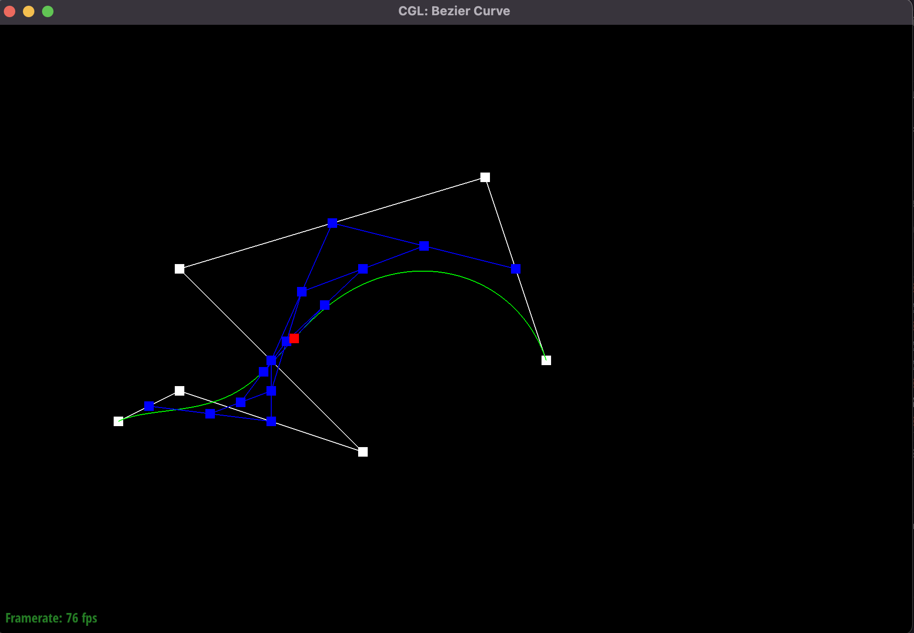
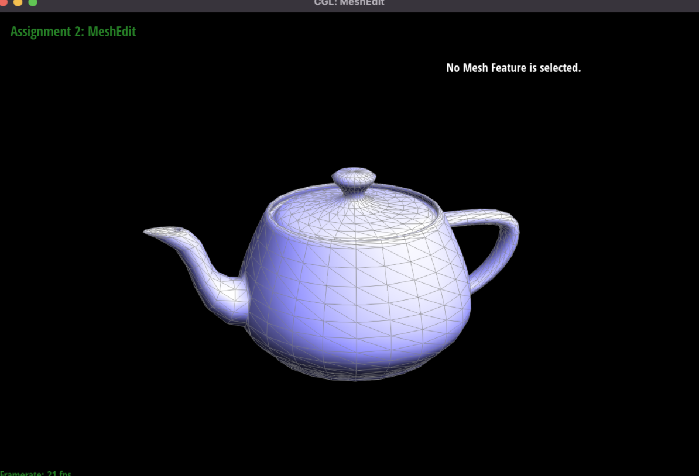

Overview
In this project, we first explored Bezier curves in 1D and 2D space using the de Casteljau algorithm. Then, we implemented various methods for manipulating triangle meshes, calculating area-weighted norms for vertices in order to use smooth Phuong shading, then implementing edge flipping and splitting in order to finally implement loop subdivision for mesh upsampling.
Section I: Bezier Curves
Part 1: Bezier Curves with 1D de Casteljau Subdivision
De Casteljau’s algorithm defines a point on the bezier curve by recursively finding points at a ratio t along the vectors connecting the defined points. To implement this, our function simply needs to return a list of these n-1 points at t, given the n original points. This function is then called n-1 times until a final single point is returned, which is the point on the final evaluated Bezier curve.
|
|
|
|
|
|
|
|

|
|
Part 2: Bezier Surfaces with Separable 1D de Casteljau
In this algorithm, similar to how bilinear interpolation works, we simply run the aforementioned algorithm on every row of our nxn matrix of control points with a parameter u, then take the resulting points and run the algorithm again with a parameter v. Essentially, we are finding control points for each row, then finding a single point on the surface with those points.
Section II
Part 3: Area-Weighted Vertex Normals
For this algorithm, we used the loop defined in lecture for iterating through all of the faces around a vertex. This is done by taking the half edge corresponding to the vertex, finding the weighted normal of its corresponding plane, taking the next half edge by finding the next edge from the twin of this half edge, and repeating until we reach the original half edge. The weighted normal of each face is found by summing the cross products of all the vectors in the face, and these weighted normals are added together and then scaled to a unit vector to find our final normal.
Part 4: Edge Flip
Diagram from spec to help with our description

Implementing the edge flip operation was fairly straightforward: we defined each vertex, face, and half edge as a variable (edges didn’t need to have their properties changed as they only correspond to the half edges, which change properties but do not get deleted or added). Each half edge had the next edge changed to the appropriate one with the new flipped edge, and the face set to the new face (using the diagram from lecture, we changed the left face to be the top face and right face to be the bottom face). The half edges of the flipped edge also had their vertices changed to be the opposing vertices, and twins set to be each other (although this was already true). Each vertex and face had its corresponding half edge set to one that was not the flipped edge, for simplicity. There was no eventful debugging journey, as we are gigachads and the code compiled with no errors on our first try and worked. Special thanks to pen and paper. As you can see, the last edge flip makes the edge disappear, as the edge becomes degenerate and is not rendered. According to Piazza though, this is valid behavior.
Part 5: Edge Split
Diagram from spec to help with our description

We implemented the edge split operation in a similar way to part 4: Given a diagram of all of the edges and half edges in the post-split mesh, we define variables for all involved faces, edges, half edges, and vertices. We also create three new edges corresponding to six new half-edges to form the middle cross, along with the original middle edge, which is now turned into the top vertical edge. The original two faces on the left and right become the top left and top right faces respectively, and we define two new faces for the bottom left and right. The vertex m in the middle is a new vertex that has its position as an average of our top and bottom vertices. We set all of the next(), twin(), etc. parameters of the half edges around our part of the mesh appropriately, and return our new vertex m. We also define, for part 6, our new half-edges m-a, a-m, d-m, and m-d as new, and the rest of the edges as not new. Likewise, m is set to have isNew = true.
|
|
|
|
Part 6: Loop subdivision
We implemented loop subdivision by first computing the new positions for the old vertices, based on the loop subdivision rule for old vertices. These were stored in those vertices’ newPosition fields. Then, we use the loop subdivision rule for new vertices to calculate the would-be positions of new vertices created from splitting each edge. These are saved into the newPosition fields of each edge. As we iterate through all the vertices and edges in this way, we set the isNew flag for these objects to false, to be sure that they are correctly marked for future steps.
Next, we split all of the completely old edges (edges that do not connect to a new vertex), and update the returned vertex to have newPosition set to the newPosition we stored in the edge earlier.
Next, we flip all of the edges that are new (set in the splitEdges function, and defined as edges that do not overlap with an old edge) and have one new and one old edge.
Finally, we update all the vertices to have their position set to their newPosition. For good measure, we go through all the edges and vertices again and set isNew to false, for our next upsampling.
We notice that for objects with harsh edges, such as the cube, these edges are significantly rounded up in upsampling. This is because with a sparse enough mesh, the sharp edges are weighted down by the surrounding vertices, which are in very different positions. Adding additional splits around the sharp corners before upsampling results in better preservation of these edges.
The reason the cube is asymmetrical is because each vertex is not symmetrically connected to the other vertices. To fix this problem, we can simply split each diagonal, so that every vertex (of the cube, not of the mesh,) is connected to every other vertex in a symmetrical way